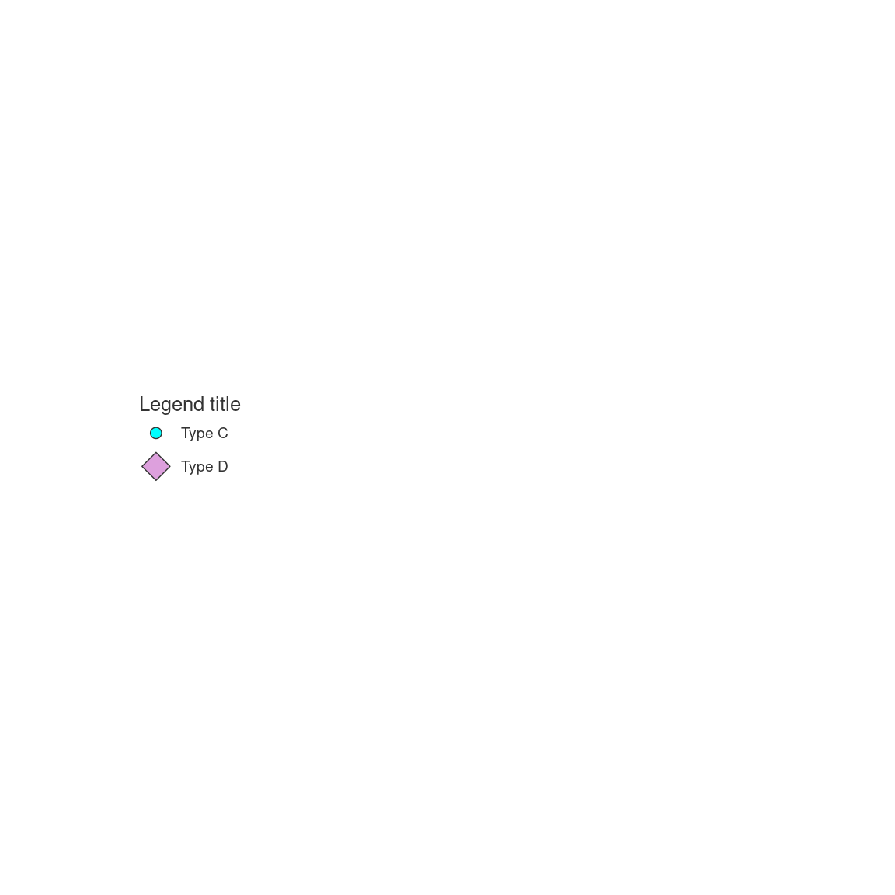

Deprecated.
This function can plot a legend for a symbols maps.
Usage
mf_legend_s(
pos = "right",
val,
pal,
pt_pch,
pt_cex,
border,
lwd = 0.7,
title = "Legend title",
title_cex = 0.8,
val_cex = 0.6,
pt_cex_na = 1,
pt_pch_na = 4,
col_na = "white",
no_data = FALSE,
no_data_txt = "No Data",
frame = FALSE,
bg,
fg,
cex = 1
)Arguments
- pos
position of the legend, one of "topleft", "top", "topright", "right", "bottomright", "bottom", "bottomleft", "left", "interactive" or a vector of two coordinates in map units (c(x, y)).
- val
vector of categories.
- pal
a set of colors
- pt_pch
pch of the symbols (0:25)
- pt_cex
cex of the symbols
- border
type = "prop": color of the symbols borders
- lwd
width of the symbols borders
- title
title of the legend
- title_cex
size of the legend title
- val_cex
size of the values in the legend
- pt_cex_na
cex of the symbols for missing values
- pt_pch_na
pch of the symbols for missing values
- col_na
color for missing values
- no_data
if TRUE a "missing value" box is plotted
- no_data_txt
label for missing values.
- frame
whether to add a frame to the legend (TRUE) or not (FALSE)
- bg
background of the legend
- fg
foreground of the legend
- cex
size of the legend; 2 means two times bigger
Examples
plot.new()
plot.window(xlim = c(0, 1), ylim = c(0, 1), asp = 1)
mf_legend_s(
val = c("Type C", "Type D"), pal = c("cyan", "plum"),
pt_pch = c(21, 23), pt_cex = c(1, 2)
)
#> 'mf_legend_s()' is deprecated. Use 'mf_legend(type = 'symb', ...)' instead.
#> pt_pch is deprecated, use pch instead.
#> pt_cex is deprecated, use cex instead.
